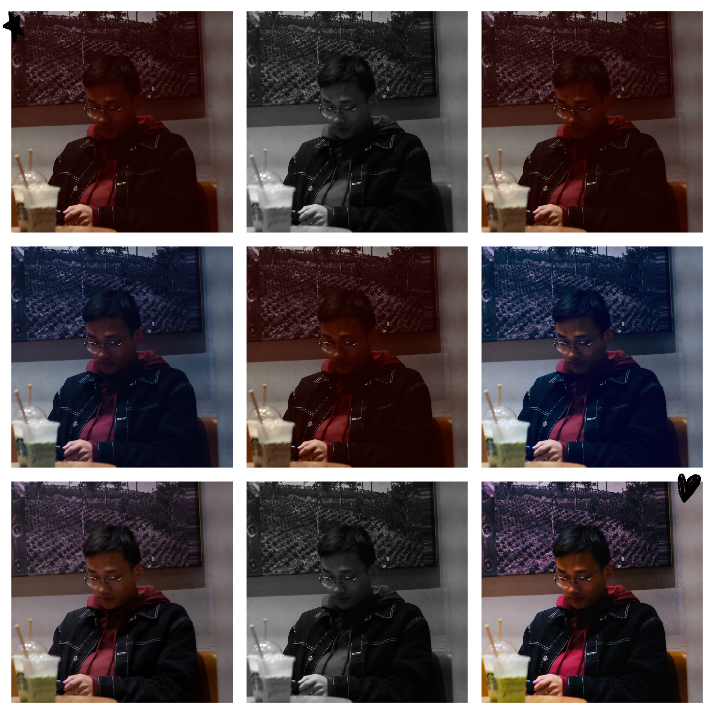
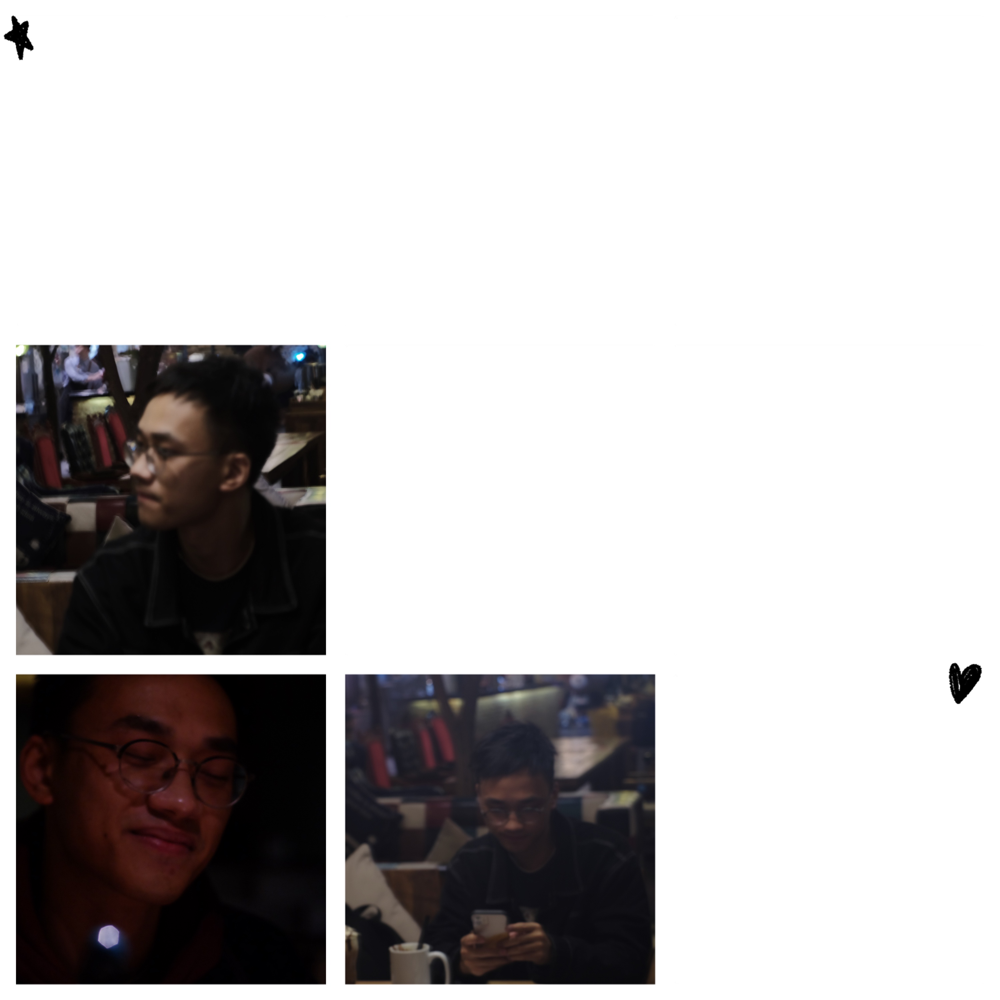

我靠近的你的所有能量守恒，没有期限。
第一次flipped是源于小叶子的声音。很温柔很神秘又很有磁性，声音的主人也谦逊又有趣。让我充满了幻想与喜欢。哦豁本来是一个腼腆害羞的小可爱，但是遇到小叶就是忍不住去开一些坏坏的玩笑，呐，可能这就是爱情吧。
然后去武汉的检查是我跟叶宝贝相遇的契机。很开心上天能给我这样一个机会见到我的Mr.Ye。其实我也忘了想象中的小叶子是什么样的了，但是见面以后高高大大的阳光大男孩在面前，就莫名的超级喜欢。
我很相信第一感觉的嗷，看到小叶第一眼，其实哦豁就喜欢上了。
n paau !
n 55!w !
n a^ol !



叶宝贝生日快乐嗷
-tan(sqrt(1-(abs(x))^(3/2))),sqrt(1/4-(x+1/2)^2),sqrt(1/4-(x-1/2)^2)
复制粘贴自己试试喔
然后前段时间小叶爸比出了点点事情，哦豁更加发现了小叶子的闪亮亮点，很神奇，越接触越喜欢，再了解更喜欢。我很开心小叶能把自己软软绵绵的一面给哦豁表露，
哦豁也很喜欢能让小叶开心，因为那样自己会双倍快乐！小叶让哦豁的双标达到了极致。小叶什么我都喜欢。
理所当然的万物之理
我不知道朱丽叶为什么爱罗密欧也不了解梁山伯和祝英台，一切就理所当然的好像碳酸氢钠加热分解，就好像你是S极，我是N极，从一开始我们就应该互相吸引。这些话花里胡哨，但是感觉就是冥冥之中的事情。
小叶根哦豁是两颗闪闪发亮的行星， 有着自己的轨道，可能就因为一次其他地方的爆炸，哦豁就成了绕着小叶子转圈圈的行星，成了小太阳的小月亮。呐小叶，你是哦豁喜欢，依赖还想时刻触碰的太阳。
哦豁是白白的但是需要太阳才能发光的小月亮，哦豁太喜欢你了呀，所以好怕离开你我眼里的光就会暗淡哦。希望以后能跟小叶子去好多好多地方，一起做好多好多事情。
小叶子来湖南找我，小叶子深夜陪我聊天，小叶子给我写情书，小叶子给我点外卖，小叶子送我可爱小手环和酷酷的外套，我都有记得哦；）而且就很感动呀～但是好久好久没有抱到小叶，
哦豁就真的超没有安全感，总是觉得可能一下子小叶就会不见了，所以就会莫名其妙发脾气呜呜，可能是更年期提前了。但是小叶总是可以很温柔的安慰我，然后开一些他自己觉得好笑但是一点也不好笑的笑话，
其实后来想一想觉得小叶子好可爱喔：）
呐小叶，哦豁喜欢你，以前喜欢你，现在喜欢你，以后也会喜欢你！喜欢你就要喜欢你的一切，所以，小叶好的坏的我都会喜欢的嗷。
叶先生，余生，请多多指教哦
Generated by 哦豁小可爱
copyright@S.J. Quigley